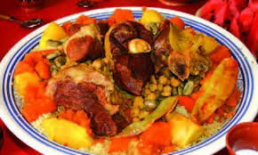

La cuisine algérienne se caractérise par une richesse tirée de la production terrestre et marine. C'est une cuisine méditerranéenne et nord-africaine ayant pour substrat la cuisine berbère. Elle offre une composante de mets variés selon les régions et selon les saisons, ce qui donne une palette culinaire très diversifiée. Cette cuisine qui fait appel à une multitude de produits, reste tout de même celle des légumes et céréales qui, depuis toujours, sont produites avec abondance dans le pays, autrefois appelé « grenier de Rome1,2,3,4 » puis « grenier de l'Europe5 ». De plus, le passé riche de l'Algérie a contribué à l'acheminement d'une abondance de mets originaires de différentes périodes et régions du monde. En effet, les conquêtes ou les déplacements démographiques vers le territoire algérien ont été l'un des principaux facteurs d'échanges entre les différents peuples (Berbères, Arabes, Turcs, Andalous, Français6 et Espagnols6). Parmi toutes les spécialités dont dispose l'Algérie, les plus fameuses sont le couscous, reconnu comme plat national, ainsi que les pâtisseries traditionnelles qualifiées de « pâtisseries orientales » dans les pays occidentaux
| plats | praix |
|---|---|
| coscouse | 350da |
| chakhchoa | 900da |
| rechta au polet | 600 da |
| berkokous | 900da |
| elfissa | 800da |
| kamonia au polet | 160da |